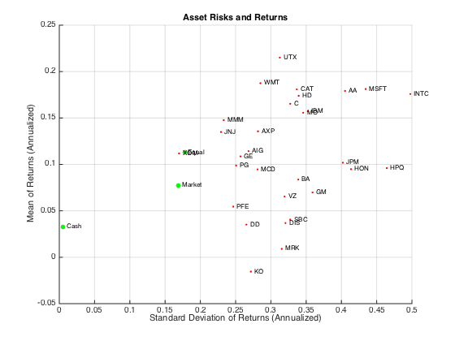
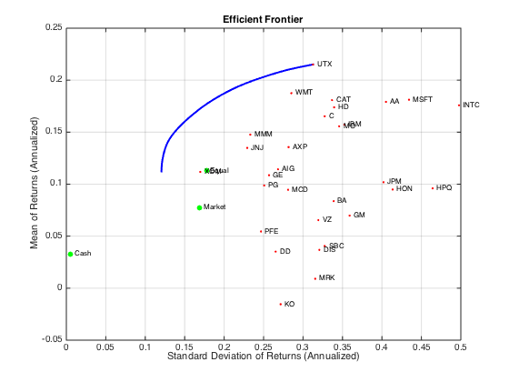
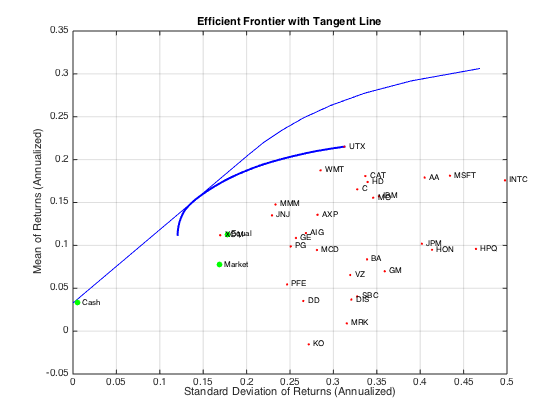
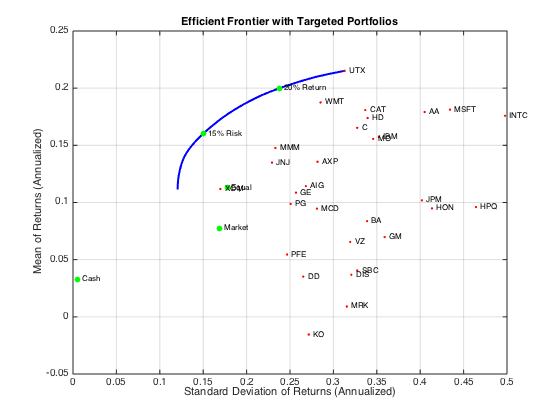
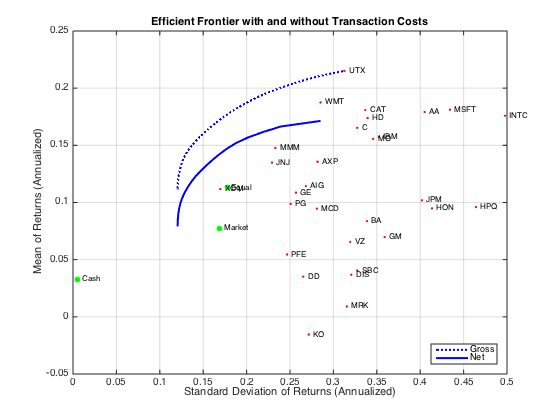
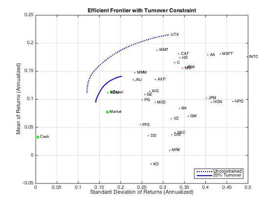
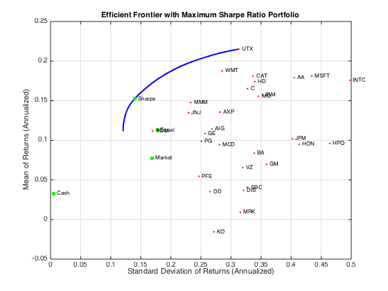
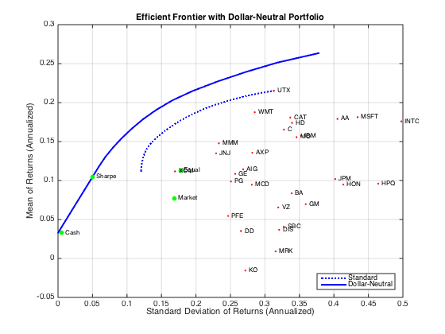
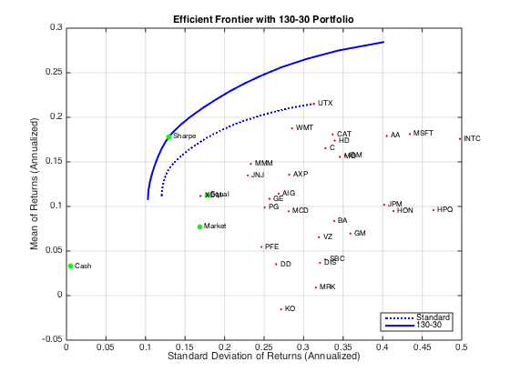

Combined Factors - In theory
Contents
- The theory
- Setup
- Create portfolio object
- Plot Helper
- Portfolio Optimization
- Estimate range of efficient portfolio Risk and Return range
- Find Specific portfolio with target Risk or target Return
- Inculding transaction cost consideration
- Including turnover constrains
- Checking Errors is only available in 2015b
- Max Sharpe portfolio
- Dollar Neutral
- 130-30
The theory
'In theory, there is no difference between theory and practice. In practice there is.'
imshow('yogi.jpg');
The theory is simple: If the whole security univere's can be reduced to a mean vector and covariance matrix (Berkshire partners: 'ridiculous!'), and if both of which can be predicted accurately. Then it is straight forward to find the optimal combination of securities, that achieve the highest return with given amount of 'risk', or the lowest risk with given target of return.
It gets fancier when we take 1) transaction cost 2) turnover constrain 3) leverage constrain 4) longshort constrains 5) tracking error into consideration. But those are auxiliary considerations. The main problem lies with the estimation of mean and covariance matrix, the later more trouble some than the former.
Typically when I need diversification most, the correlation between securities collapse to 1.
What if the underlying securites under consideration is inherently uncorrelated and stable? Especially during the distressed period?
Setup
load BlueChipStockMoments
mret = MarketMean;
mrsk = sqrt(MarketVar);
cret = CashMean;
crsk = sqrt(CashVar);
Create portfolio object
p = Portfolio('AssetList', AssetList, 'RiskFreeRate', CashMean); p = setAssetMoments(p, AssetMean, AssetCovar); p = setInitPort(p, 1/p.NumAssets); [ersk, eret] = estimatePortMoments(p, p.InitPort);
Plot Helper
figure; clf; portfolioexamples_plot('Asset Risks and Returns', ... {'scatter', mrsk, mret, {'Market'}}, ... {'scatter', crsk, cret, {'Cash'}}, ... {'scatter', ersk, eret, {'Equal'}}, ... {'scatter', sqrt(diag(p.AssetCovar)), p.AssetMean, p.AssetList, '.r'});
Portfolio Optimization
p = setDefaultConstraints(p); pwgt = estimateFrontier(p, 40); [prsk, pret] = estimatePortMoments(p, pwgt);
plot
clf; portfolioexamples_plot('Efficient Frontier', ... {'line', prsk, pret}, ... {'scatter', [mrsk, crsk, ersk], [mret, cret, eret], {'Market', 'Cash', 'Equal'}}, ... {'scatter', sqrt(diag(p.AssetCovar)), p.AssetMean, p.AssetList, '.r'});
Tangent line to efficient frontier
q = setBudget(p, 0, 1.5); qwgt = estimateFrontier(q, 20); [qrsk, qret] = estimatePortMoments(q, qwgt); % Plot efficient frontier with tangent line (0 to 1 cash) clf; portfolioexamples_plot('Efficient Frontier with Tangent Line', ... {'line', prsk, pret}, ... {'line', qrsk, qret, [], [], 1}, ... {'scatter', [mrsk, crsk, ersk], [mret, cret, eret], {'Market', 'Cash', 'Equal'}}, ... {'scatter', sqrt(diag(p.AssetCovar)), p.AssetMean, p.AssetList, '.r'});
Estimate range of efficient portfolio Risk and Return range
[rsk, ret] = estimatePortMoments(p, estimateFrontierLimits(p)); display(rsk); display(ret);
rsk =
0.0348
0.0903
ret =
0.0094
0.0179
Find Specific portfolio with target Risk or target Return
TargetReturn = 0.20; % input target annualized return and risk here TargetRisk = 0.15; % Obtain portfolios with targeted return and risk awgt = estimateFrontierByReturn(p, TargetReturn/12); [arsk, aret] = estimatePortMoments(p, awgt); bwgt = estimateFrontierByRisk(p, TargetRisk/sqrt(12)); [brsk, bret] = estimatePortMoments(p, bwgt); % Plot efficient frontier with targeted portfolios clf; portfolioexamples_plot('Efficient Frontier with Targeted Portfolios', ... {'line', prsk, pret}, ... {'scatter', [mrsk, crsk, ersk], [mret, cret, eret], {'Market', 'Cash', 'Equal'}}, ... {'scatter', arsk, aret, {sprintf('%g%% Return',100*TargetReturn)}}, ... {'scatter', brsk, bret, {sprintf('%g%% Risk',100*TargetRisk)}}, ... {'scatter', sqrt(diag(p.AssetCovar)), p.AssetMean, p.AssetList, '.r'}); % Display portfolio weight aBlotter = dataset({100*awgt(awgt > 0),'Weight'}, 'obsnames', p.AssetList(awgt > 0)); fprintf('Portfolio with %g%% Target Return\n', 100*TargetReturn); disp(aBlotter); bBlotter = dataset({100*bwgt(bwgt > 0),'Weight'}, 'obsnames', p.AssetList(bwgt > 0)); fprintf('Portfolio with %g%% Target Risk\n', 100*TargetRisk); disp(bBlotter);
Portfolio with 20% Target Return
Weight
CAT 1.1445
INTC 0.17452
MO 9.6521
MSFT 0.85862
UTX 56.918
WMT 31.253
Portfolio with 15% Target Risk
Weight
INTC 2.2585
JNJ 9.2162
MMM 16.603
MO 15.388
MSFT 4.4467
PG 4.086
UTX 10.281
WMT 25.031
XOM 12.69
 Inculding transaction cost consideration
BuyCost = 0.0020; SellCost = 0.0020; q = setCosts(p, BuyCost, SellCost); qwgt = estimateFrontier(q, 20); [qrsk, qret] = estimatePortMoments(q, qwgt); % Plot efficient frontiers with gross and net returns clf; portfolioexamples_plot('Efficient Frontier with and without Transaction Costs', ... {'line', prsk, pret, {'Gross'}, ':b'}, ... {'line', qrsk, qret, {'Net'}}, ... {'scatter', [mrsk, crsk, ersk], [mret, cret, eret], {'Market', 'Cash', 'Equal'}}, ... {'scatter', sqrt(diag(p.AssetCovar)), p.AssetMean, p.AssetList, '.r'});
Including turnover constrains
BuyCost = 0.0020; SellCost = 0.0020; Turnover = 0.2; q = setCosts(p, BuyCost, SellCost); q = setTurnover(q, Turnover); [qwgt, qbuy, qsell] = estimateFrontier(q, 20); [qrsk, qret] = estimatePortMoments(q, qwgt); % Plot efficient frontier with turnover constraint clf; portfolioexamples_plot('Efficient Frontier with Turnover Constraint', ... {'line', prsk, pret, {'Unconstrained'}, ':b'}, ... {'line', qrsk, qret, {sprintf('%g%% Turnover', 100*Turnover)}}, ... {'scatter', [mrsk, crsk, ersk], [mret, cret, eret], {'Market', 'Cash', 'Equal'}}, ... {'scatter', sqrt(diag(p.AssetCovar)), p.AssetMean, p.AssetList, '.r'}); fprintf('Sum of Purchases by Portfolio along Efficient Frontier (Max. Turnover %g%%)\n', ... 100*Turnover); disp(100*sum(qbuy)); fprintf('Sum of Sales by Portfolio along Efficient Frontier (Max. Turnover %g%%)\n', ... 100*Turnover); disp(100*sum(qsell));
Sum of Purchases by Portfolio along Efficient Frontier (Max. Turnover 20%) Columns 1 through 7 20.0000 20.0000 20.0000 20.0000 20.0000 20.0000 20.0000 Columns 8 through 14 20.0000 20.0000 20.0000 20.0000 20.0000 20.0000 20.0000 Columns 15 through 20 20.0000 20.0000 20.0000 20.0000 20.0000 20.0000 Sum of Sales by Portfolio along Efficient Frontier (Max. Turnover 20%) Columns 1 through 7 20.0000 20.0000 20.0000 20.0000 20.0000 20.0000 20.0000 Columns 8 through 14 20.0000 20.0000 20.0000 20.0000 20.0000 20.0000 20.0000 Columns 15 through 20 20.0000 20.0000 20.0000 20.0000 20.0000 20.0000
Checking Errors is only available in 2015b
ii = [15, 16, 20, 21, 23, 25, 27, 29, 30]; % indexes of assets to include in tracking portfolio
TrackingError = 0.05/sqrt(12); TrackingPort = zeros(30, 1); TrackingPort(ii) = 1; TrackingPort = (1/sum(TrackingPort))*TrackingPort;
q = setTrackingError(p, TrackingError, TrackingPort);
qwgt = estimateFrontier(q, 20); [qrsk, qret] = estimatePortMoments(q, qwgt);
[trsk, tret] = estimatePortMoments(q, TrackingPort);
% Plot efficient frontier with tracking-error constraint
clf; portfolioexamples_plot('Efficient Frontier with 5% Tracking-Error Constraint', ... {'line', prsk, pret, {'Unconstrained'}, ':b'}, ... {'line', qrsk, qret, {'Tracking'}}, ... {'scatter', [mrsk, crsk], [mret, cret], {'Market', 'Cash'}}, ... {'scatter', trsk, tret, {'Tracking'}, 'r'});
Max Sharpe portfolio
p = setInitPort(p, 0); swgt = estimateMaxSharpeRatio(p); [srsk, sret] = estimatePortMoments(p, swgt); % Plot efficient frontier with portfolio that attains maximum Sharpe ratio clf; portfolioexamples_plot('Efficient Frontier with Maximum Sharpe Ratio Portfolio', ... {'line', prsk, pret}, ... {'scatter', srsk, sret, {'Sharpe'}}, ... {'scatter', [mrsk, crsk, ersk], [mret, cret, eret], {'Market', 'Cash', 'Equal'}}, ... {'scatter', sqrt(diag(p.AssetCovar)), p.AssetMean, p.AssetList, '.r'}); % Set up a dataset object that contains the portfolio that maximizes the Sharpe ratio Blotter = dataset({100*swgt(swgt > 0),'Weight'}, 'obsnames', AssetList(swgt > 0)); fprintf('Portfolio with Maximum Sharpe Ratio\n'); disp(Blotter);
Portfolio with Maximum Sharpe Ratio
Weight
INTC 2.6638
JNJ 9.0044
MMM 15.502
MO 13.996
MSFT 4.4777
PG 7.4588
UTX 6.0056
WMT 22.051
XOM 18.841
 Dollar Neutral
Exposure = 1; q = setBounds(p, -Exposure, Exposure); q = setBudget(q, 0, 0); q = setOneWayTurnover(q, Exposure, Exposure, 0); [qwgt, qlong, qshort] = estimateFrontier(q, 20); [qrsk, qret] = estimatePortMoments(q, qwgt); [qswgt, qslong, qsshort] = estimateMaxSharpeRatio(q); [qsrsk, qsret] = estimatePortMoments(q, qswgt); % Plot efficient frontier for a dollar-neutral fund structure with tangency portfolio clf; portfolioexamples_plot('Efficient Frontier with Dollar-Neutral Portfolio', ... {'line', prsk, pret, {'Standard'}, 'b:'}, ... {'line', qrsk, qret, {'Dollar-Neutral'}, 'b'}, ... {'scatter', qsrsk, qsret, {'Sharpe'}}, ... {'scatter', [mrsk, crsk, ersk], [mret, cret, eret], {'Market', 'Cash', 'Equal'}}, ... {'scatter', sqrt(diag(p.AssetCovar)), p.AssetMean, p.AssetList, '.r'}); % Set up a dataset object that contains the portfolio that maximizes the Sharpe ratio Blotter = dataset({100*qswgt(abs(qswgt) > 1.0e-4), 'Weight'}, ... {100*qslong(abs(qswgt) > 1.0e-4), 'Long'}, ... {100*qsshort(abs(qswgt) > 1.0e-4), 'Short'}, ... 'obsnames', AssetList(abs(qswgt) > 1.0e-4)); fprintf('Dollar-Neutral Portfolio with Maximum Sharpe Ratio\n'); disp(Blotter); fprintf('Confirm Dollar-Neutral Portfolio\n'); fprintf(' (Net, Long, Short)\n'); disp([ sum(Blotter.Weight), sum(Blotter.Long), sum(Blotter.Short) ]);
Dollar-Neutral Portfolio with Maximum Sharpe Ratio
Weight Long Short
AA 0.54635 0.54635 0
AIG 3.2638 3.2638 0
AXP 0.99646 0.99646 0
BA -3.7532 0 3.7532
C 15.036 15.036 0
CAT 4.0011 4.0011 0
DD -19.396 0 19.396
DIS -5.1796 0 5.1796
GE -3.8848 0 3.8848
GM -3.9958 0 3.9958
HD 1.1822 1.1822 0
HON -1.5408 0 1.5408
HPQ 0.1064 0.1064 0
IBM -8.6533 0 8.6533
INTC 1.8999 1.8999 0
JNJ 1.4707 1.4707 0
JPM -2.7136 0 2.7136
KO -15.253 0 15.253
MCD 4.1986 4.1986 0
MMM 8.1604 8.1604 0
MO 4.3871 4.3871 0
MRK 4.0236 4.0236 0
MSFT 4.3777 4.3777 0
PFE -9.7673 0 9.7673
PG 1.771 1.771 0
SBC -5.6426 0 5.6426
UTX 6.1694 6.1694 0
VZ -2.6179 0 2.6179
WMT 0.91105 0.91105 0
XOM 19.896 19.896 0
Confirm Dollar-Neutral Portfolio
(Net, Long, Short)
-0.0000 82.3985 82.3985
 130-30
Leverage = 0.3; q = setBounds(p, -Leverage, 1 + Leverage); q = setBudget(q, 1, 1); q = setOneWayTurnover(q, 1 + Leverage, Leverage); [qwgt, qbuy, qsell] = estimateFrontier(q, 20); [qrsk, qret] = estimatePortMoments(q, qwgt); [qswgt, qslong, qsshort] = estimateMaxSharpeRatio(q); [qsrsk, qsret] = estimatePortMoments(q, qswgt); % Plot efficient frontier for a 130-30 fund structure with tangency portfolio clf; portfolioexamples_plot(sprintf('Efficient Frontier with %g-%g Portfolio', ... 100*(1 + Leverage),100*Leverage), ... {'line', prsk, pret, {'Standard'}, 'b:'}, ... {'line', qrsk, qret, {'130-30'}, 'b'}, ... {'scatter', qsrsk, qsret, {'Sharpe'}}, ... {'scatter', [mrsk, crsk, ersk], [mret, cret, eret], {'Market', 'Cash', 'Equal'}}, ... {'scatter', sqrt(diag(p.AssetCovar)), p.AssetMean, p.AssetList, '.r'}); % Set up a dataset object that contains the portfolio that maximizes the Sharpe ratio Blotter = dataset({100*qswgt(abs(qswgt) > 1.0e-4), 'Weight'}, ... {100*qslong(abs(qswgt) > 1.0e-4), 'Long'}, ... {100*qsshort(abs(qswgt) > 1.0e-4), 'Short'}, ... 'obsnames', AssetList(abs(qswgt) > 1.0e-4)); fprintf('%g-%g Portfolio with Maximum Sharpe Ratio\n',100*(1 + Leverage),100*Leverage); disp(Blotter); fprintf('Confirm %g-%g Portfolio\n',100*(1 + Leverage),100*Leverage); fprintf(' (Net, Long, Short)\n'); disp([ sum(Blotter.Weight), sum(Blotter.Long), sum(Blotter.Short) ]);
130-30 Portfolio with Maximum Sharpe Ratio
Weight Long Short
DD -9.5565 0 9.5565
HON -6.0245 0 6.0245
INTC 4.0335 4.0335 0
JNJ 7.1234 7.1234 0
JPM -0.44583 0 0.44583
KO -13.646 0 13.646
MMM 20.908 20.908 0
MO 14.433 14.433 0
MSFT 4.5592 4.5592 0
PG 17.243 17.243 0
SBC -0.32712 0 0.32712
UTX 5.3584 5.3584 0
WMT 21.018 21.018 0
XOM 35.323 35.323 0
Confirm 130-30 Portfolio
(Net, Long, Short)
100.0000 130.0000 30.0000
